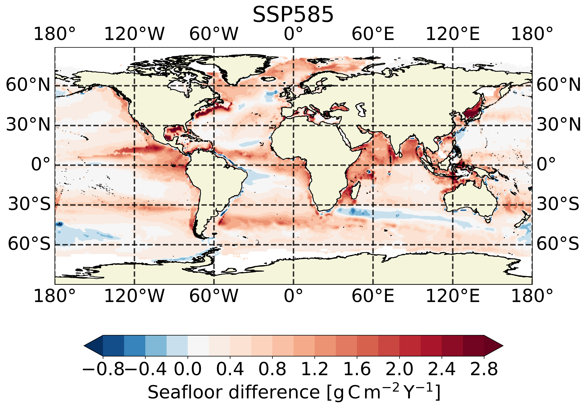
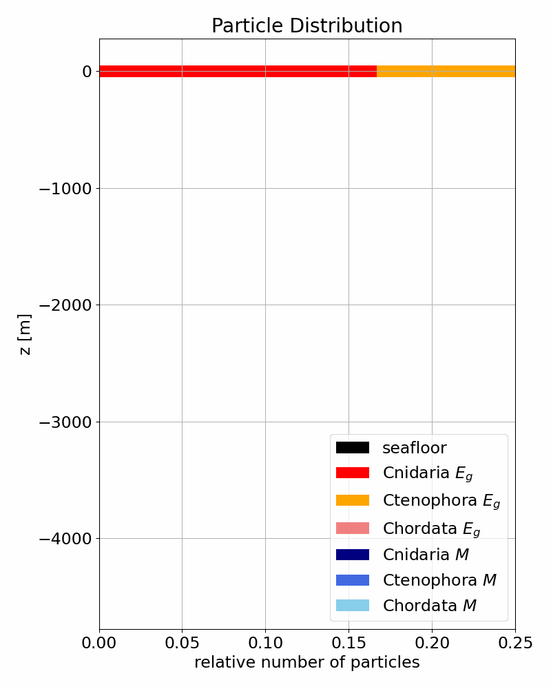

Sinkining Animations

Mass Flux Visualizations

Sinking Locations
 Modeling
Modeling
- Mass-Dependent and Surface-Dependent
- Constant and Variable sinking speed
- Horizontal Advection with sea currents
- Stochastic fragmentation
Numerical Capabilities
- Run simulations from terminal
- Numerous plotting methods for better visualization
- Efficient memory handling in case of large simulations
- Easy to adapt
 Recent Data Inputs
Recent Data Inputs
- Use of current initial biomass data (Luo et al, 2020)
- Exponential and Linear decay rates (Lebrato et al, 2019)